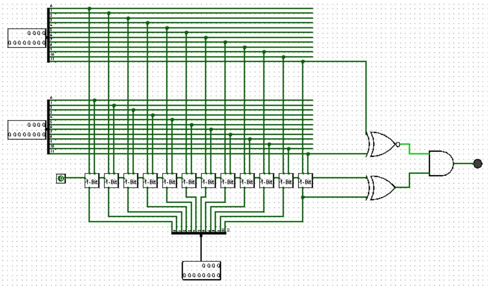

Verslag
Titel: CA Project 2: Adders
Dit verslag werd opgesteld door:
- Naam: Siebe Haché
Studentennummer: 20242412
Email adres: sieben.hache@student.uantwerpen.be
- Naam: Thijs Van Schel
Studentennummer: 20245821
Email adres: thijs.vanschel@student.uantwerpen.be
Aantal man-uren besteed: 5
Moeilijkheidsgraad: 4/10
Inhoud van de oplossing
De oplossing bestaat uit de volgende bestanden:
Verslag
Opgave 1:
De 1 bit full adder heeft 3 inputs; A, B en CarryIn. Ook heeft die 2 outputs; Som en CarryOut. Hiermee gaan we 2 binaire cijfers optellen, samen met de CarryIn. Uiteindelijk zal het de som en de CarryOut als resultaat geven.
Uit de truth table en berekeningen, kunnen we volgende booleaanse vergelijking halen:
Som = (A ⊕ B) ⊕ CarryIn
CarryOut = (A * B) + CarryIn * (A ⊕ B)
Digital Electronics Laboratory. https://www.iitg.ac.in/cseweb/vlab/Digital-System-Lab/fa_lg.php?id=9
Unknown, U. (z.d.). Tutorial 5. https://cvbl.iiita.ac.in/sks/coa-files/tutorial/Tutorial-5.pdf
Dit hebben we kunnen maken aan de hand van AND, OR- en XOR-gates. De som berekenen we door A & B te XOR'en, daarna het resultaat ook te XOR'en met de CarryIn. De CarryOut vinden we dan door of, A en B samen te voegen, of wanneer het resultaat van (A⊕B) en CarryIn samen 1 is.
Als laatste hebben we het volledige circuit gebouwd aan de hand van de eerder vermelde gates, om de booleaanse expressie te implementeren.
Een screenshot van de oplossing, samen met de bijhorende truth table:
Opgave 2:
Door gebruik te maken van 1-bit adders konden we gemakkelijk een ripple carry 12-bit adder maken. Voor inputs voor elke 1-bit adder hebben we 1-bit van elke 12-bit term en de CarryIn van de vorige. De som en CarryOut worden daarna doorgegeven aan de volgende adder.
Om de overflow aan te duiden hebben we gekozen om gebruik te maken van een lampje dat licht geeft als er een overflow aanwezig is. Dit gebeurt wanneer CarryIn en CarryOut van het MSB na gaan. Een voorbeeld hiervan, dat gegeven is in de opgave, is 2047 + 1 = -2048 or -2048 + (-1) = 2047.

Opgave 3:
We hebben een 4-Bit adder gemaakt die de outputs s0, s1, s2, s3, P0, G0 teruggeeft. We gebruiken als inputs twee 4-bit inputs en een carryIn. De sum die we hebben als output genereren we aan de hand van vier 1-Bit adders. Voor de outputs P0 en G0 deze outputs maken we aan de hand van deze formules, binnen in onze 4-bit adder hebben we ook gebruik gemaakt can een carry-lookahead. Zodat onze uitneindelijke snelheid nog beter is. :
pn = ai + bi
gn = ai * bi
P0 = pn * pn * pn * pn
G0 = g3 + (p3 * g2) + (p3 * p2 * g1) + (p3 * p2 * p2 * g0)
De P staat voor propagate en de G staat voor generate. De grote P en G gaan we dan als input gebruiken voor onze carry-lookahead. Hierdoor zal het programma sneller werken dan het programma in opgave 2. De drie verschillende 4-bit adders zullen tegelijkertijd kunnen rekenen tegenover de vorige, waar elke 1-bit adder moest wachten eer dat vorige klaar was om te starten.
De P en G gebruiken we om da CarryIns te produceren voor de andere 4- bit adders:
C1 = G0 + (P0 * C0)
C2 = G1 + (P0 * C0) + (P0 * P1 * C0)
C3 = G2 + (P2 * C1) + (P2 * P1 * G0) + (P2 * P1 * P0 * C0)
4 Bit Adder logisim implementatie:
4 Bit Adder truth table:
Carry lookahead 4 Bit:
 Volledig circuit:
Opgave 4:
Bij de ripple-carry adder komen we 12 keer 3 gates tegen vooraleer we de uitkomst weten en bij de carry lookahead adder komen we maar 8 gates tegen. Dus de carry lookahead adder is bijna 4,5 keer sneller dan de ripple carry-adder.
Volledig circuit:
Opgave 4:
Bij de ripple-carry adder komen we 12 keer 3 gates tegen vooraleer we de uitkomst weten en bij de carry lookahead adder komen we maar 8 gates tegen. Dus de carry lookahead adder is bijna 4,5 keer sneller dan de ripple carry-adder.
{kind=link}
{kind=link}
{kind=link}
{kind=link}
{kind=link}
{kind=link}
{kind=link}
{kind=link}
{kind=link}